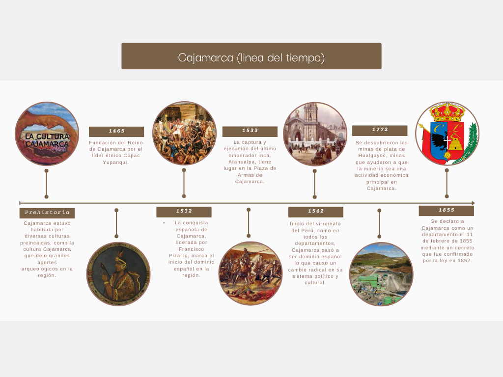

Aspectos Historicos del departamento
Fundación:
La Fundación de Cajamarca, también conocida como la Fundación de San Antonio de Cajamarca, fue un evento crucial en la historia de Perú. Ocurrió el 19 de octubre de 1682 cuando el Capitán Don Baltazar Maldonado y Saavedra estableció el asentamiento en el valle de Cajamarca, en la región montañosa del norte del país.Este evento marcó el inicio de la colonización española en la zona y sentó las bases para el desarrollo de la ciudad de Cajamarca, que eventualmente se convertiría en un importante centro urbano y cultural en los Andes peruanos. La fundación de Cajamarca no solo tuvo implicaciones históricas sino también culturales y sociales significativas para la región y para el Perú en su conjunto.
Cajamarca(Historia, origen y cultura) :
La cultura de Cajamarca perteneció al periodo del Intermedio Temprano, siendo una cultura preinca que surgió alrededor de los años 200 d.c - 800 d.c. Ubicándose en el norte del Perú, donde hasta el día de hoy, es donde se encuentra la ciudad de Cajamarca. Cabe resaltar que la cultura perteneciente a este departamento, se destacó por su textilería,metalurgia y principalmente su tan sofisticada cerámica. La cultura de Cajamarca comprendió en un pasado tres grandes territorios, la cuenca alta de los valles de Chancay, Lambayeque, Chayama, y Chotano. Además, la cultura logró extenderse del departamento de Amazonas, hasta las serranías de la Libertad y el norte de Ancash; siendo su centro de influencia y desarrollo un valle llamado “interandino de Cajamarca”. Hubo 4 culturas que tuvieron su ubicación con parte del de cajamarca, conocidas como:
Cajamarca también se caracteriza por tener una cultura mestizada dada la yuxtaposición occidental sobre la indigena siendo así que algunos aspectos se pueden apreciar predominio de costumbres europeas occidentales y por otra parte se puede apreciar que se prevalecen de costumbres oriundas y nativas. Además, como dato importante, el departamento se encuentra situado en el Cuarto del Rescate, en el cual mantuvieron prisionero al último Inca, Atahualpa.
Divinidades
El Lanzón Monolítico es la divinidad suprema de la cultura Chavín, representada físicamente por un ídolo de piedra de granito. Mide 4.53 metros de altura y está ubicado en las galerías del Templo Viejo.Huari fue una de las divinidades preincaicas se ha afirmado que fue la principal de la cultura chavín. Tiempo después que este caiga la cultura Wari continuó rindiendo culto a la divinidad.
Localización actual
El departamento de Cajamarca está ubicado en la zona norte del Perú y tiene una superficie de 33 318 km². Por el norte limita con ecuador, por el este con el departamento de amazonas, por el oeste con Lambayeque y Piura, y por el sur con La libertad. Este departamento cuenta con 127 distritos y 13 provincias, las cuales son: Cajamarca, Cajabamba, Celendín, Chota, Contumazá, Cutervo, Hualgayoc, Jaén, San Marcos, San Ignacio, San Miguel, San Pablo y Santa Cruz.
Danzas
La danza de los diablos:Esta llamativa danza se caracteriza principalmente por su gran valor histórico y origen hispánico, que es representado por los personajes de la danza a través de la vestimenta, coreografía y música utilizada. Siendo perteneciente a una festividad para “La Virgen del Rosario" como un acto de devoción y con el propósito de lograr el perdón de los pecados. La danza de los diablos es ejecutada únicamente por hombres.
Chunchos (también conocida como danza blanca): La danza blanca está formada e interpretada por 12 danzantes, lo más destacable de esta es el hecho de que los implicados recogen el pañuelo que dejan en el suelo con la boca. La vestimenta está conformada por un saco blanco y un pantalón del mismo color que se encuentran sujetos por semillas, que suenan en el momento que la danza es realizada dado al movimiento constante. También se usa un pañuelo alrededor del cuello, se sostiene una calabaza con chicha y se alza una bandera. Un personaje principal que complementa la danza es el llamado “Chuncho negro”, quien porta un látigo y usa una máscara negra que tiene los ojos, la nariz y boca pintados de color rojo.
La danza de pallas: Este baile se realiza entre las fechas del 8 al 13 de agosto, ocurriendo durante una fiesta conocida como “La fiesta patronal de San Lorenzo”. Los orígenes de la danza de pallas se remontan a las épocas incaicas, siendo que las mujeres son las únicas que pueden realizarla. Debido a que en un pasado, las damas eran seleccionadas para bailar en honor al inca.
